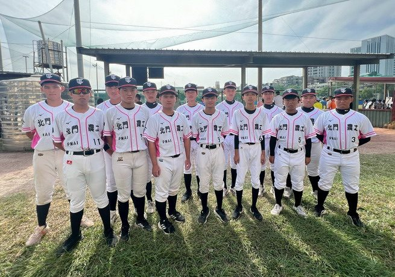
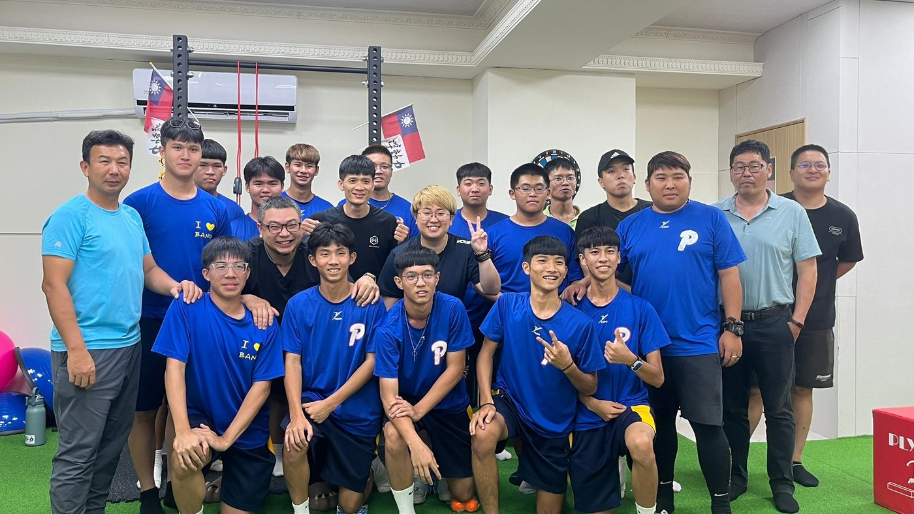
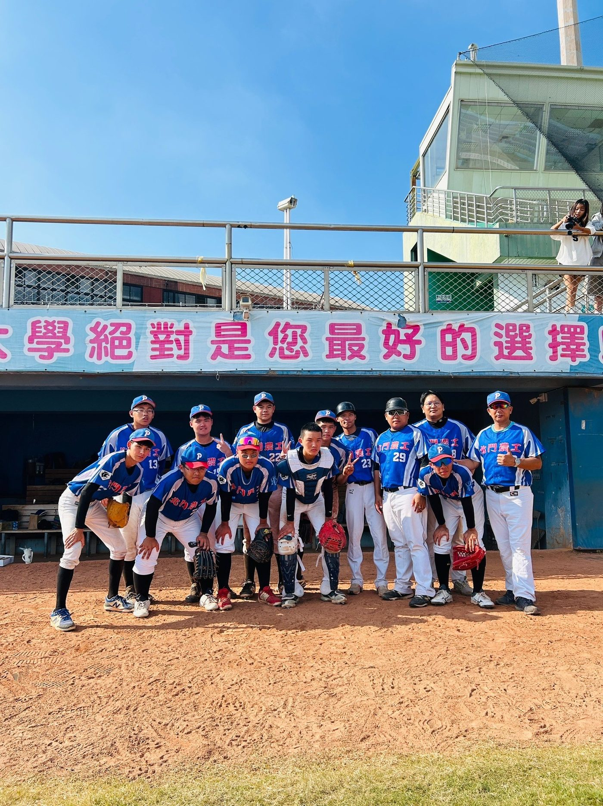
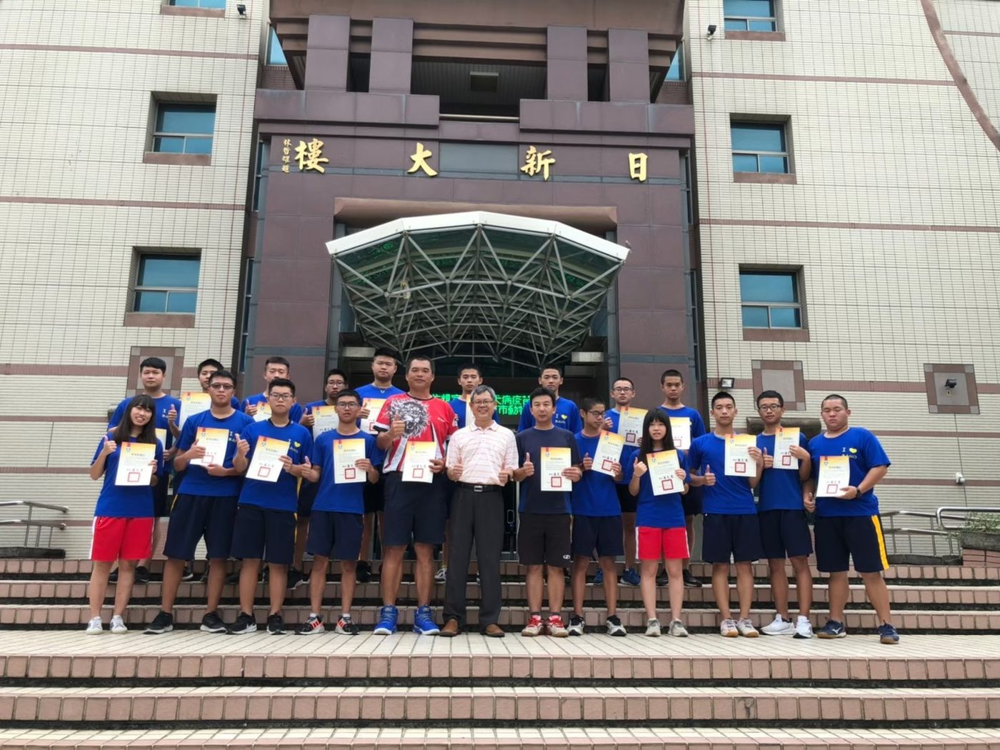

01我的故事
我是台南市佳里區國立北門農工土木科老師（梁琮琪），也是棒球社團的指導老師(兼總教練)。
本校地處偏遠，自正式成立棒球隊後，經過歷屆學長在太陽底下的揮汗練習，獲得相當亮眼的成績，例如打進中信黑豹旗棒球大賽的64強、全國高中棒球軟式組打進全國賽(相當32強)；想當然爾，我們是以社團身分花相當多練習時間才能獲得此亮眼的成績，所以，我們教練們想把學生這樣努力不懈、堅毅的精神，透過公益推廣方式（類似推廣社區棒球方式）集合偏鄉的孩童或想學習棒球但無力負擔的學生，利用假日來教導他們，讓他們能成為基層棒球的養分。
然而，利用體育項目推廣公益的想法，若要長期運作需要有經費的大力支持，才能將本校成為偏郊地區的棒球推廣中心，故而冀希能獲得贊助經費來推動公益運動項目。




推薦理由
本校地處偏郊，學校也只有操場和一座排球用的風雨球場，而每周要使用風雨球場還需要將排球網的柱子移除才能安全的練球，相當地花費時間；若是要借一塊紅土球場來適應，除了經費考量外，也因為離市區相當遠，交通也相當不便。但是，還是不減喜愛棒球的熱誠，自從正式成立棒球隊之後，經過歷屆學長在太陽底下的揮汗練習，獲得相當亮眼的成績，例如打進中信黑豹旗棒球大賽的64強、全國高中棒球軟式組打進全國賽(相當32強)；想當然爾，我們是以社團身分花相當多練習時間才能獲得此亮眼的成績，所以，我們教練們想把學生這樣努力不懈、堅毅的精神，透過公益推廣方式（類似推廣社區棒球方式）集合偏鄉的孩童或想學習棒球但無力負擔的學生，利用假日來教導他們，讓他們能成為基層棒球的養分。
然而，利用體育項目推廣公益的想法，若要長期運作需要有經費的大力支持，才能將本校成為偏郊地區的棒球推廣中心，故而冀希能獲得贊助經費來推動公益運動項目。